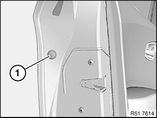
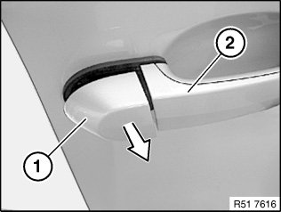
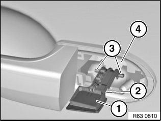
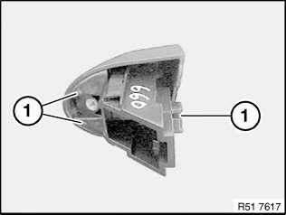
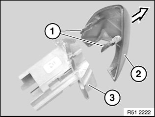

51 21 180 Removing and Installing/Replacing Cover on Outside Door Handle
51 21 180 Removing and installing/replacing cover on outside door handle

Lever out cap (1) and release screw underneath.
Installation:
If necessary, replace faulty trim (1).

Pull off cover (1) in direction of arrow with outside door handle (2) opened slightly.
Version with light package:

Installation:
Make sure outside door handle light (1) is correctly positioned in area (2).
Guides (3) of outside door handle light (1) must be correctly seated in carrier for outside door handle (4).

Installation:
Guides (1) must not be damaged.

Replacement:
NOTE: Similar to graphic.
Detach cover (2) from filler piece (3).
Installation:
Catches (1) of cover (2) must not be damaged.